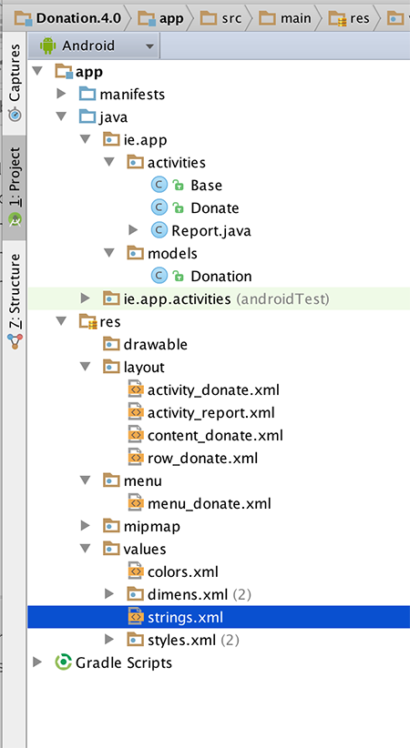
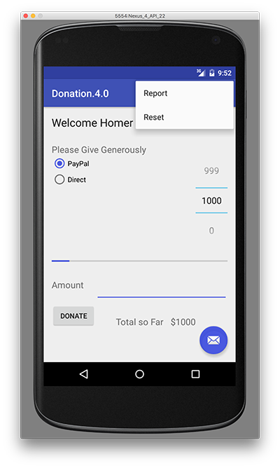
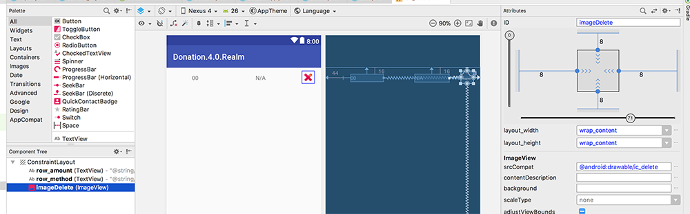
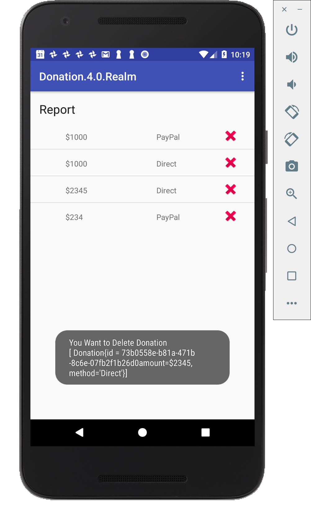

Objectives
In Donation.4.0.Realm you will again build on the previous lab and add in some new features and Database Support, and an Application Object. It's actually very similar to Donation.4.0, but with Realm support, the code base is reduced substantially.
Setup - Starter Code
As with the previous labs, you can download the solution/starter code for Donation.4.0.starter, or continue on with your own version.
Your current project (after renaming/copying) should looks something like this:

In this lab, you are required to do the following:
- Add a new Menu Option - 'Reset' - to clear out any donations after the target is reached
- Add Realm Database Support to Donation to manage the donations made
- Refactor existing Classes to accommodate the new database classes
The following steps will guide you through these requirements, so we'll start with the Menu Option.
Adding a new Menu Option
First of all, confirm that the current Menu looks like this:

but we want something like this:

The first thing to do is add in a new resource in strings.xml (or use Android Studio (Alt + Return) to fix the string resource error if you paste in the menu item directly)
<string name="menuReset">Reset</string>and then the corresponding menu item in donate.xml
<item
android:id="@+id/menuReset"
android:orderInCategory="100"
app:showAsAction="never"
android:title="@string/menuReset"
android:onClick="reset"/>It's probably worth removing the 'Settings' menu item at this stage too, and its related method in the Base class. Next, edit Base.java and add in the following method stub
public void reset(MenuItem item) {}to ensure our app won't crash when the menu loads (and looks for a method 'reset')
Run the app again and confirm you get the following Menu :
We can't implement this menu option fully yet, so for the moment, we'll just 'reset' the target amount back to zero (0) - Step 03.
Resetting the Target Amount
This is more of an interim step but is necessary to ensure the menu event handler for the 'Reset' option is working correctly.
First, edit Donate.java and introduce an implementation of the 'reset' method
@Override
public void reset(MenuItem item)
{
// Your implementation goes here
}the
@Overrideannotation is important - can you explain why?
So add in the code necessary to deal with the Reset Menu option being selected, and reset the totalDonated back to zero (0). You also need to update the Donate UI to reflect this reset, so try and have a go at that too.
Run the app again to confirm that the 'Reset' Menu option is now functioning.
Application Object
Before we complete this step, here's the code you need for the previous step.
@Override
public void reset(MenuItem item)
{
totalDonated = 0;
amountTotal.setText("$" + totalDonated);
donations.clear();
}In order to keep out application design coherent, we now bring in an 'Application' object.
Create a new package called 'ie.app.main' and incorporate this class here:
package ie.app.main;
import android.app.Application;
import android.util.Log;
public class DonationApp extends Application
{
@Override
public void onCreate()
{
super.onCreate();
Log.v("Donate", "Donation App Started");
}
}Application objects need to be references in the AndroidManifest.xml - at the very top as 'andorid:name'
<application
android:allowBackup="true"
android:icon="@mipmap/ic_launcher"
android:label="@string/app_name"
android:supportsRtl="true"
android:theme="@style/AppTheme"
android:name="ie.app.main.DonationApp">Make sure the 'Donation App Started' appears in the logs to verify that it has actually been engaged correctly, when you launch the app.

Donation Model
We now need to refactor the Base class (next Step) and move the donation related attributes and method (i.e. the variables target, totalDonated and the donations list, and the newDonation() method) into our DonationApp class.
This is a revised version of DonationApp - which now manages a list of donations. It also centralises the 'makeDonation' event implementing it as a method. We will also 'open' and 'close' our database here eventually. Replace your DonationApp class with this one:
package ie.app.main;
import java.util.ArrayList;
import java.util.List;
import android.app.Application;
import android.util.Log;
import android.widget.Toast;
import ie.app.models.Donation;
public class DonationApp extends Application
{
public final int target = 10000;
public int totalDonated = 0;
public List <Donation> donations = new ArrayList<Donation>();
public boolean newDonation(Donation donation)
{
boolean targetAchieved = totalDonated > target;
if (!targetAchieved) {
donations.add(donation);
totalDonated += donation.amount;
}
else
Toast.makeText(this, "Target Exceeded!", Toast.LENGTH_SHORT).show();
return targetAchieved;
}
@Override
public void onCreate()
{
super.onCreate();
Log.v("Donate", "Donation App Started");
}
}Base Class Refactoring
The Base activity can now be completely refactored to make use of the DonationApp object. You WILL have errors at the end of this step, due to referencing our (as yet missing) database classes - but we'll fix those in the next few steps.
This is our new Base class
public class Base extends AppCompatActivity {
public DonationApp app;
@Override
protected void onCreate(Bundle savedInstanceState) {
super.onCreate(savedInstanceState);
app = (DonationApp) getApplication();
app.dbManager.open();
app.dbManager.setTotalDonated(this);
}
@Override
protected void onDestroy() {
super.onDestroy();
app.dbManager.close();
}
@Override
public boolean onCreateOptionsMenu(Menu menu)
{
getMenuInflater().inflate(R.menu.menu_donate, menu);
return true;
}
@Override
public boolean onPrepareOptionsMenu (Menu menu){
super.onPrepareOptionsMenu(menu);
MenuItem report = menu.findItem(R.id.menuReport);
MenuItem donate = menu.findItem(R.id.menuDonate);
MenuItem reset = menu.findItem(R.id.menuReset);
if(app.dbManager.getAll().isEmpty())
{
report.setEnabled(false);
reset.setEnabled(false);
}
else {
report.setEnabled(true);
reset.setEnabled(true);
}
if(this instanceof Donate){
donate.setVisible(false);
if(!app.dbManager.getAll().isEmpty())
{
report.setVisible(true);
reset.setEnabled(true);
}
}
else {
report.setVisible(false);
donate.setVisible(true);
reset.setVisible(false);
}
return true;
}
public void report(MenuItem item)
{
startActivity (new Intent(this, Report.class));
}
public void donate(MenuItem item)
{
startActivity (new Intent(this, Donate.class));
}
public void reset(MenuItem item) { }
}Adding Realm Database Support
Once you configure the project and add the necessary Database class, (to fix the errors from the previous step) this step is relatively straight forward - all you have to do is replace the method calls that manages the donationList with the respective dbManager calls.
First add this to your PROJECT level build.gradle
classpath "io.realm:realm-gradle-plugin:2.2.1"under 'dependencies' so it looks like
dependencies {
classpath 'com.android.tools.build:gradle:3.0.1'
classpath "io.realm:realm-gradle-plugin:2.2.1"
// NOTE: Do not place your application dependencies here; they belong
// in the individual module build.gradle files
}and add this to your APP level build.gradle
apply plugin: 'realm-android'at the top of the file so it looks like
apply plugin: 'com.android.application'
apply plugin: 'realm-android'Next thing to do is create is a new ie.app.database package in your project and add the following class to it, and fix any import errors.
public class DBManager {
public Realm realmDatabase;
public DBManager(Context context) {
Realm.init(context);
RealmConfiguration config = new RealmConfiguration.Builder()
.name("donation.realm")
.schemaVersion(1)
.build();
Realm.setDefaultConfiguration(config);
}
public void open() throws SQLException {
realmDatabase = Realm.getDefaultInstance();
}
public void close() {
realmDatabase.close();
}
public void add(Donation d) {
realmDatabase.beginTransaction();
realmDatabase.copyToRealm(d);
realmDatabase.commitTransaction();
}
public List<Donation> getAll() {
RealmResults<Donation> result = realmDatabase.where(Donation.class)
.findAll();
return result.subList(0,result.size());
}
public Donation get(String id) {
return realmDatabase.where(Donation.class)
.equalTo("id",id)
.findAll()
.first();
}
public void setTotalDonated(Base base) {
base.app.totalDonated = realmDatabase.where(Donation.class)
.findAll()
.sum("amount")
.intValue();
}
public void reset() {
realmDatabase.beginTransaction();
realmDatabase.where(Donation.class)
.findAll()
.deleteAllFromRealm();
realmDatabase.commitTransaction();
}
}This is our Realm Database Helper Class, which we covered in the lectures, but take a few moments to investigate the class and familiarise yourself with the methods you'll be using.
There are a few classes you'll need to modify to add database support to your project so refer to the Lecture Material to complete this.
Next, update your DonationApp class with the following:
public class DonationApp extends Application
{
public final int target = 10000;
public int totalDonated = 0;
public DBManager dbManager;
public boolean newDonation(Donation donation)
{
boolean targetAchieved = totalDonated > target;
if (!targetAchieved)
{
dbManager.add(donation);
totalDonated += donation.amount;
}
else
{
Toast.makeText(this, "Target Exceeded!", Toast.LENGTH_SHORT).show();
}
return targetAchieved;
}
@Override
public void onCreate()
{
super.onCreate();
Log.v("Donate", "Donation App Started");
dbManager = new DBManager(this);
dbManager.open();
Log.v("Donate", "Realm Database Created & Opened");
}
}Note the references to a new dbManager object.
Also, our Donation class needs a slight refactoring, so replace the current class with this one.
public class Donation extends RealmObject
{
public String id;
public int amount;
public String method;
public Donation() {}
public Donation (int amount, String method)
{
this.id = UUID.randomUUID().toString();
this.amount = amount;
this.method = method;
}
@Override
public String toString() {
return "Donation{" +
"id = " + id +
"amount=$" + amount +
", method='" + method + '\'' +
'}';
}
}Note the 'extends RealmObject', this is an important part of implementing Realm Database Support so be sure you understand this.
Once you make these changes, commenting out/removing the donations List you'll get a number of errors, which actually indicates which classes you need to now update and add the database calls (and remove the donations List calls).
Each error requires only one line of code to be fixed, so have a go and updating each of the classes (and we'll have a look at the solution near the end of the Practical Lab).
Once you fix all the errors, and run the app again, you should still be able to make donations - but this time those donations are stored in our Realm database.
And as a final check, if you shut down the app and restart it again, you should still be able to see the donations made in the Report.
Resetting the Donations
The last step in this lab involves deleting all the donations in the database when the user wishes to 'Reset'.
There's actually not a lot required in this step - all you need to do is call reset() on your database object when the user selects the Menu option, so modify your reset method (in your Donate.java) as follows:
@Override
public void reset(MenuItem item)
{
app.dbManager.reset();
app.totalDonated = 0;
amountTotal.setText("$" + app.totalDonated);
}You also need to update your onPrepareOptionsMenu() method in your Base class to handle the 'Reset' menu option being disabled/displayed properly, so refer to the lecture material for this.
That's about it really - with one exception. There's a small bug in the app related to when the app restarts and the target HAS NOT been reached.
Can you find it, and more importantly, fix it?
Deleting a Donation
As an extra feature, we'll take a look at how to possibly delete a single Donation from the database, as opposed to resetting (or deleting ) all the donations, like we did in the last step.
First thing to do is add a new 'delete button' to our custom Layout row_donate.xml so it looks like this:

Everything you need is in the screenshot, so pay particular attention to the properties and type of the 'button'.
Next, open your Report.java and have a go at 'attaching a click event' to the 'delete button' on your custom row.
You'll need to something along the lines of:
- bind to your new imageDelete widget in your DonationAdapter using 'findViewById()'
something like
ImageView deleteView = view.findViewById(R.id.imageDelete);- 'Tag' the row with the donation id
something like
view.setTag(donation.id);- attach an OnClickListener to be triggered on the click of the 'button'
something like
deleteView.setOnClickListener(new View.OnClickListener() {
@Override
public void onClick(View v) {
Toast.makeText(context, "You Want to Delete Donation " +
"[ " + app.dbManager.get(view.getTag().toString()) + "]",Toast.LENGTH_LONG).show();
}
});if all goes to plan you should get something OnClickListener

Where's the actual deleting you may ask? Well, that'll be up to you....